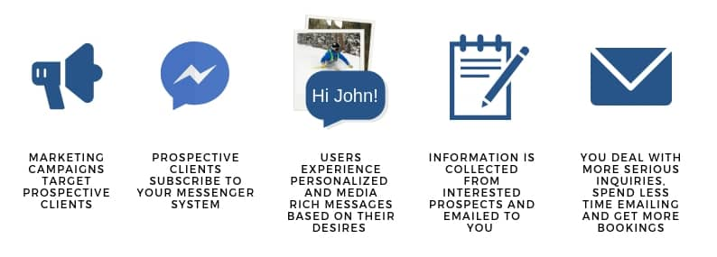

Facebook Messenger Marketing is the new and more effective way businesses are communicating with, and getting the attention of, their prospective and existing clients.
It is both a marketing tool and communication platform changing how businesses and clients interact with each other. This is accomplished in an automated way, through personalized conversations.
You can think of this as the new e-mail marketing!
However, instead of sending 1 email to a subscriber list, you get to engage in 1 on 1 conversations that are customized to each individual.
Ask yourself these questions. Are you actively educating your prospective clients on why your business and services should be the provider that they trust to buy/book from? Are they convinced that they will have a safe and memorable experience?
If not, this is where the importance of having a built up sales system comes in. Using a service like Facebook Messenger Marketing will help you achieve this so your business stands out from the competition and lets you gain the trust of your prospective clients.
WHAT IS THE PURPOSE?
Facebook Messenger Marketing can be thought of as to first inform and educate your prospective clients. You start by building and peeking their interests with well constructed and visual conversations.
Next you move into learning more about them and determining their exact desires. Finally, once enough trust and a relationship has been established, clients are more confident in booking or buying your services.
HOW DOES IT WORK?
When clients interact with your Messenger system, they become subscribed to your business. Much like email subscribers, they can also unsubscribe from you.
From this point on, you have the ability to send them informational (or educational) content, product offers, or encourage these interested individuals to take a specific action like booking a trip, or buying a product.
This is all run through the Facebook Messenger platform.
WHY FACEBOOK MESSENGER?
According to CX Central, messaging app usage has surpassed social media usage, with numbers spiking into the billions. The amount of time people are spending on messaging platforms has been skyrocketing. Not only is this huge, but it's a critical piece of information for businesses. How so?
In this era it is safe to assume that your family, friends, clients and prospective clients are all on messaging apps. Most people are familiar with communicating through messaging platforms due to the ease of use, popularity, quickness and convenience.
So how can businesses use this insight to their advantage?
By adapting. Make your prospective clients feel more comfortable by using platforms that they are already familiar and happy with.
One of the biggest and most popular is the Facebook Messenger platform. With 1.3 billion monthly active users, you are bound to have a countless amount of your prospective clients already on there. Many businesses are flocking to these platforms because it makes sense to go where their clients hang out. This is why Facebook Messenger Marketing is catching on quickly.
WHAT ARE SOME OF THE BENEFITS?
• Get better engagement levels than anywhere else
• Find, create and begin nurturing relationships with prospective clients (all automatically)
• 60% click through rates
• 70% open rates
Facebook Messenger has 1.3 billion active monthly users and 2 billion messages sent each month. Those businesses who are ahead of the game and adopting Facebook Messenger Marketing are being rewarded. Just take a look at the results from Vodafone and Lego.
Want to learn more about how this technology can be used to help you grow your business? Look at this example of finding new clients consistently.
If you are interested in having a FREE discovery session to learn how Facebook Messenger Marketing can help you in your business, please send us through an email.
Get in touch with us: info@alpkea.com